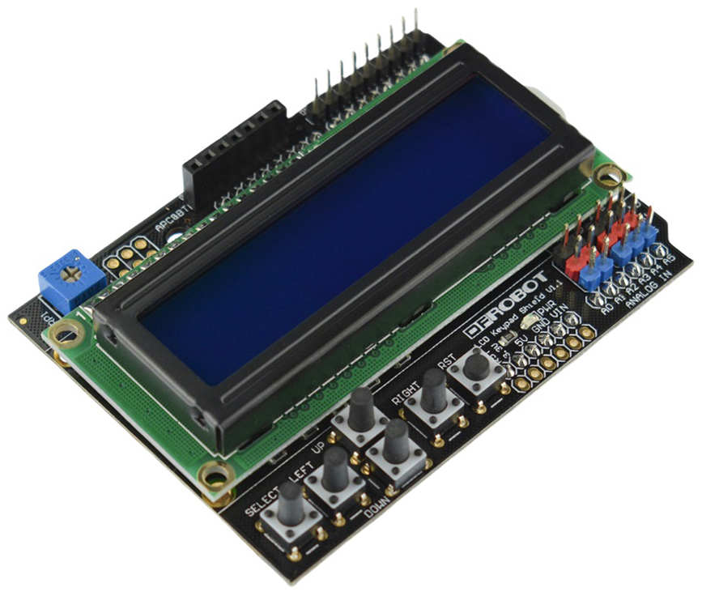

Arduino Based NAS Display
https://github.com/atmelino/NASDisplay
Hardware Components
- Arduino UNO
- LCD shield
- USB B to A cable or USB B to motherboard USB 2 connector

https://wiki.dfrobot.com/LCD_KeyPad_Shield_For_Arduino_SKU__DFR0009
Arduino Installation
Upload the NASDisplay.ino file to the Arduino.
The version on github works with a GPIO pin based LCD display (not the I2C version):
LiquidCrystal lcd(8, 9, 4, 5, 6, 7); // select the pins used on the LCD panel
Is the Arduino connected?
lsusb
Output:
Bus 001 Device 002: ID 2341:0001 Arduino SA Uno (CDC ACM)
Permission denied: '/dev/ttyACM0'
sudo usermod -a -G dialout [your_username]
log out and log back in
actually, only worked after reboot
Test communication with Arduino
sudo apt-get install minicom
minicom -D /dev/ttyACM0
Press CTRL-A Z
Press P
Press C for 9600 baud
Server Software Installation
Software Versions
The 2019 version of the python software was using the PySensors packages.
This package no longer works with modern python versions.
The 2025 version of the python software uses the psutil package which also provides CPU temperature.
Development Software Installation
Download python script onto your server
cd ~
mkdir github
cd github
git clone https://github.com/atmelino/NASDisplay.git
Install lm-sensors to get access to hardware sensors
sudo apt-get install lm-sensors
Install required python libraries
pip install pyserial
pip install psutil
Run Service as root
Since we want to be able to shut down the computer with a python
script, we need to run the service as root.
In the NASDisplay.service file, the lines will be
[Service]
User=root
Copy the NASDisplay.service file to /etc/systemd/system/:
/etc/systemd/system/NASDisplay.service
https://github.com/atmelino/NASDisplay/blob/master/systemd/NASDisplay.service
Modify as needed (for example, user name and path of python script)
The serial and sensor packages need to be installed such that they
are available to root.
sudo su
cd ~
umask 022
pip install pyserial
pip install psutil
https://stackoverflow.com/questions/36898474/how-to-install-a-module-for-all-users-with-pip-on-linux
Autostart Display script at Boot
add the NASDisplay software as a service using systemd.
add file NASDisplay.service to /etc/systemd/system.
Start and stop:
sudo systemctl start NASDisplay.service
sudo systemctl stop NASDisplay.service
check status:
sudo systemctl status NASDisplay.service
during development
sudo systemctl daemon-reload
sudo systemctl restart NASDisplay.service
To start automatically at boot:
sudo systemctl enable NASDisplay.service
To list all services:
sudo systemctl list-unit-files
or
sudo systemctl list-unit-files | grep NASDisplay.service
To see output from service:
journalctl -u NASDisplay.service -b
To shorten journal file:
sudo journalctl --rotate
sudo journalctl --vacuum-time=1s
----------------------------------------------
old
pip install pyserial
pip install PySensors
modemmanager causes problems by probing serial ports
remove modemmanager:
sudo apt-get purge modemmanager
https://askubuntu.com/questions/216114/how-can-i-remove-modem-manager-from-boot